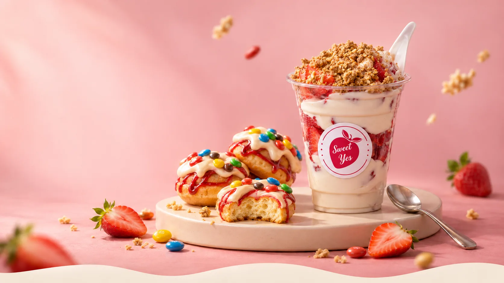
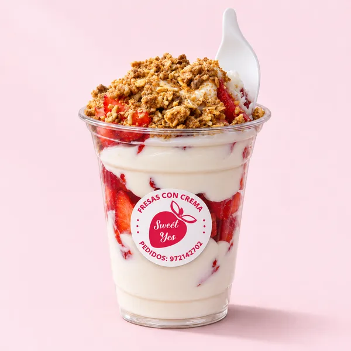

La carta
Arma tu vaso
Sobre nosotros
Un antojo tiene su lugar en Santa Clara.
En Sweet Yes, cada vaso empieza con dos frutas y dos cremas que tú eliges. El último toque también es tuyo: granola para el crujido, chocolate o un puñado de chin chin.
Visita el local ↓
Sweet Yes en cifras
- Clientes atendidos
- Más de 7 mil Según Sweet Yes
- Productos en la carta
- 36
- Tamaños de vaso
- 4
Opiniones de clientes
«atención rápida y agradable, recomiendo ir»
«Tiene una excelente atención y variedad de productos»
«Las mejores fresas con crema!!»
¿Qué incluye mi vaso?
Todos los tamaños incluyen dos frutas y dos cremas artesanales. El mediano lleva un topping, el grande dos, el maxi tres y el de un litro cuatro. Cada topping adicional cuesta S/ 1.
¿Cómo confirmo mi pedido?
Revisa tu selección, pulsa «Pedir por WhatsApp» y envía el mensaje. El equipo te confirmará disponibilidad, precio final y cómo recibir tu pedido.
¿Hacen delivery a mi zona?
Consulta la cobertura, el costo de envío y el tiempo estimado al ingresar tu dirección en Rappi. Para pedidos directos, consulta por WhatsApp.
¿A quién consulto por ingredientes o alergias?
Escríbenos antes de pedir e indica el producto y el ingrediente que necesitas evitar. El equipo del local podrá revisar tu consulta.
¿Cómo se usan mis datos?
La selección de productos y las observaciones se preparan en tu navegador. Al abrir WhatsApp se trasladan al mensaje para que lo revises y envíes. Sweet Yes utiliza la información que compartes para atender tu consulta o coordinar tu pedido. Google Maps recibe una solicitud cuando se carga el mapa del local.
Para consultar por tus datos o solicitar su acceso, rectificación, cancelación u oposición, contacta a Sweet Yes.